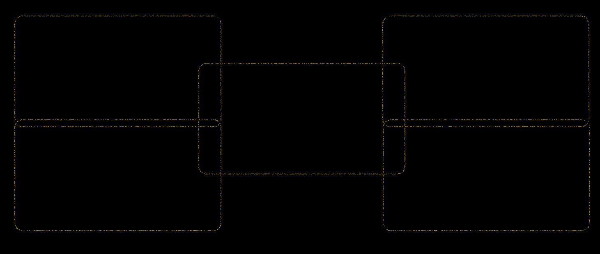

DIGITAL ARTS > EDUCATION
DIGITAL ARTS > EDUCATION
art design aims to develop
the good artistic accomplishment
and aesthetic ability
established in 2008, liaoning province is the
first to carry out the education of professional
digital media technology
professional art and design
is one of the important construction
of professional of neusoft
is one of the earliest professional
develop animation education in liaoning province
aims to cultivate good artistic
talents cultivation orientation, professional
training objectives: training has a
good artistic